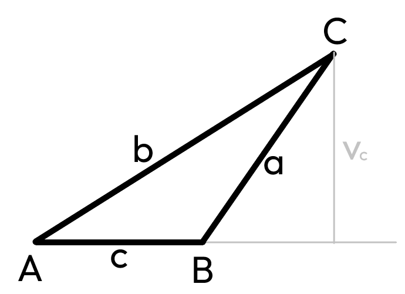

Tato stránka se věnuje základním geometrickým konstrukcím, jako jsou osa úsečky, osa úhlu, body, rovnoběžky, kolmice, čtverec a obdélník a dále. Najdete zde jednoduché vysvětlení a obrázky, které vám pomohou lépe pochopit základní pojmy geometrie.
Osa úsečky je přímka, která je kolmá na úsečku a prochází jejím středem. Každý bod na ose úsečky má stejnou vzdálenost od obou krajních bodů úsečky.

Osa úhlu je polopřímka, která vychází z vrcholu úhlu a rozděluje úhel na dva shodné menší úhly. Každý bod na ose úhlu má stejnou vzdálenost od obou ramen úhlu.
Body jsou základními prvky geometrie, které nemají rozměr, pouze určují polohu. Rovnoběžky jsou přímky, které se nikdy neprotínají, a mají všude stejnou vzdálenost. Kolmice jsou přímky, které se protínají pod pravým úhlem (90°).
*více zde

Čtverec je čtyřúhelník, který má všechny strany stejně dlouhé a všechny vnitřní úhly pravé (90°). Má dvě osy souměrnosti, které procházejí středy protilehlých stran, a dvě úhlopříčky, které jsou stejně dlouhé a navzájem se půlí.
*více zde

Obdélník je čtyřúhelník, který má protilehlé strany stejně dlouhé a všechny vnitřní úhly pravé (90°). Má dvě osy souměrnosti, které procházejí středy jeho stran. Úhlopříčky obdélníku jsou stejně dlouhé a navzájem se půlí.
*více zde
Sečna je přímka, která protíná kružnici ve dvou bodech. Tečna je přímka, která se kružnice dotýká právě v jednom bodě. Tětiva je úsečka, která spojuje dva libovolné body na kružnici a leží celá uvnitř kruhu.
*více zde

Těžnice je úsečka, která spojuje vrchol trojúhelníku se středem protilehlé strany. Každý trojúhelník má tři těžnice, které se protínají v jednom bodě nazývaném těžiště. Těžiště je bod, ve kterém by bylo možné trojúhelník vyvážit na špičce, protože je to střed "hmotnosti" trojúhelníku. Těžistě dělí těžnice na 1/3 a 2/3.
*více zde
Výška trojúhelníku je úsečka, která vede z vrcholu trojúhelníku kolmo na protilehlou stranu (nebo její přímku). Každý trojúhelník má tři výšky, které se protínají v jednom bodě zvaném ortocentrum. Výšky slouží například k výpočtu obsahu trojúhelníku.
*více zde

Střední příčka je úsečka, která spojuje středy dvou stran trojúhelníku. Každý trojúhelník má tři střední příčky a všechny jsou navzájem rovnoběžné s jednou ze stran trojúhelníku a mají poloviční délku oproti této straně. Střední příčky rozdělují trojúhelník na čtyři menší trojúhelníky se stejným obsahem. Trojúhelníky jsou shodné, příčky jsou rovnoběžné.